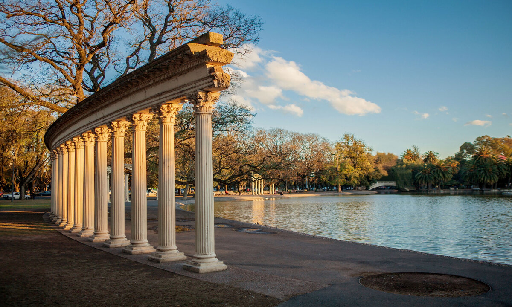
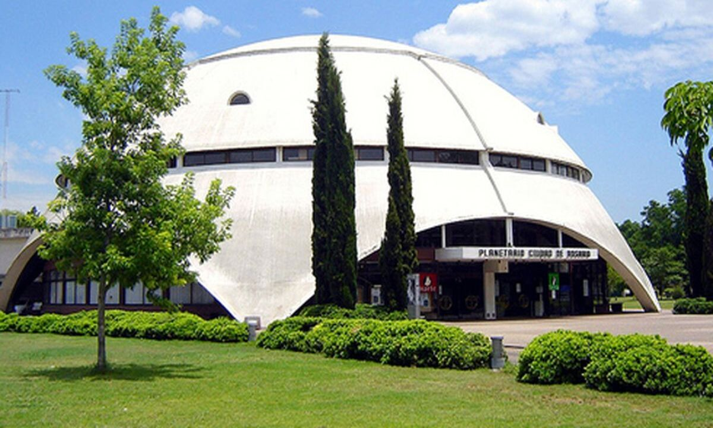
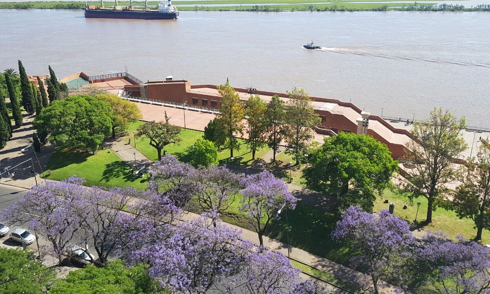
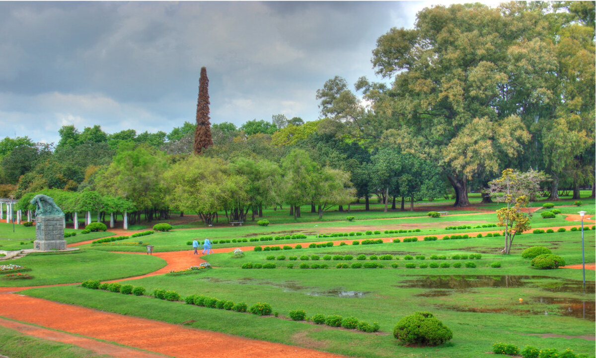

Parques
Parque Independencia

El Parque de la Independencia fue el primer parque de la ciudad, inaugurado el 1 de enero de 1902.2 Su origen se vincula a cuatro plazas públicas en la intersección de dos nuevos amplios bulevares, el "Bv. Santafesino" y el "Bv. Argentino" (actuales Bv. Oroño y Av. Pellegrini). Las cuatro plazas se llamaban "Independencia".
Tiene una superficie de 1,26 km² e incluye:
- Un lago artificial, conocido popularmente como "el laguito", que puede recorrerse en lanchas (originalmente un pequeño vapor) o botes de remos y de pedales. En su centro se encuentra una fuente de aguas danzantes.
- El Rosedal, sector que data de 1915, con abundantes especies de rosas, esculturas y fuentes.
- La Fuente de Cerámica donada por la comunidad de residentes españoles en 1936. Se la considera la mayor del mundo en su tipo.
- El Jardín Francés, de 1942, con arriates florales, árboles y una gran fuente de mármol.
- El Calendario, donde todas las tardes desde 1946, los jardineros modifican los macizos de flores para mostrar el día del año y la fecha.
- Un área reservada para eventos, inicialmente exposiciones de ganadería, y luego ampliada a la industria y el comercio.
- El Hipódromo de Rosario perteneciente al Jockey Club local.
- El Museo de la Ciudad de Rosario, ubicado en una antigua casa que había funcionado desde 1902 como "Escuela de Aprendices Jardineros".
- El Estadio Municipal Jorge Newbery, de 1925, el primer club público estatal de Argentina.
- El Museo Municipal de Bellas Artes Juan B. Castagnino, abierto en 1937.
- El Museo Histórico Provincial Dr. Julio Marc, de 1939.
- El Jardín de los Niños, un área de 3,5 ha con divertimientos y facilidades educacionales (ex Zoológico Municipal).
- Un parque de atracciones mecánicas llamado International Park, el único que poseía la ciudad, desmantelado en 2013, después de un trágico accidente. Un parque similar, mucho más pequeño, se encuentra ubicado frente al Estadio Marcelo Bielsa.
- Club Atlético Newell's Old Boys, equipo de Primera División de Argentina y su Estadio Marcelo Bielsa
- Club Gimnasia y Esgrima de Rosario
- Club Atlético Provincial
Parque Urquiza

El Parque Urquiza es un parque urbano público de la ciudad de Rosario, Argentina.
Se encuentra ubicado en el borde costanero sudeste, bordeando las barrancas del río Paraná. Está limitado por la calle Mendoza, la Av. Belgrano, la calle Chacabuco y el comienzo de Av. Pellegrini. Su nombre es un homenaje al General Justo José de Urquiza, Presidente de la Nación Argentina de 1854 a 1860.
Dentro del parque se encuentran:
- el Anfiteatro Municipal Humberto de Nito, con capacidad en sus gradas de hormigón para más de 3.000 espectadores
- el Complejo Astronómico Municipal, que comprende el planetario Luis Cándido Carballo, el Museo Experimental de Ciencias y el Observatorio Víctor Capolongo (nombrado así en honor al insigne profesor y astrónomo que propició su instalación)
- un inmenso bajorrelieve del escultor Lucio Fontana El Sembrador, ubicado en el lugar desde donde se realizó la primera exportación de trigo
- un busto del General Urquiza, obra del escultor Erminio Blotta
- el edificio de la antigua Estación Ferroviaria del ex Ferrocarril Oeste Santafesino
- el emplazamiento de las baterías que enfrentaron la flota anglo-francesa, después del Combate de la Vuelta de Obligado
Parque España

El Parque de España es un complejo urbanístico de Rosario, Argentina. Comprende el parque en sí, un centro cultural de la AECID y el Colegio Internacional Parque España, con 1 ha cubierta, cerca del centro histórico de la ciudad, en la ribera del río Paraná.
El parque es un amplio sector aledaño a la línea costera de la barranca del Paraná, con césped y árboles, como pavimentos para pedestres, y un buen lugar de estacionamiento. El centro cultural, al norte del complejo, fue en parte proyectado por el urbanista catalán Oriol Bohigas,1 e incluye un teatro de 500 butacas, una sala de conferencias, tres galerías de exhibición de arte (dentro de cinco ex túneles ferroviarios del s. XIX acondicionados y refuncionalizados como galerías de exposición), una hemeroteca y una biblioteca de videos. La fachada sur de la edificación posee una espectacular escalinata que sube los numerosos metros del nivel inferior de la parte baja de la barranca. Allí pueden sentarse 5.000 personas para performances en el parque.
El complejo alberga el "Colegio Internacional" y un "Instituto Superior", establecido por el Ministerio Español de Educación y Ciencias y son dirigidos por funcionarios españoles. El Colegio es propiedad de la Fundación Complejo Parque de España desde el 25 de mayo de 1993. Tiene cursos básicos y avanzados, con la triple orientación Humanidades, Ciencias-Tecnología y Negocios. Los estudiantes reciben el equivalente del sistema español de educación. Anteriormente el complejo cultural y educativo albergó al Centro Asociado de la Universidad Nacional de Educación a Distancia.
Parque Alem

El Parque Alem es un parque público de Rosario, provincia de Santa Fe, Argentina. Se encuentra al norte de la ciudad, cerca del río Paraná, pudiéndose observar las islas.
Fue nombrado en homenaje al líder político Leandro N. Alem, por lo que el parque posee un monumento estatuario en su honor.
El parque posee juegos infantiles, un importante centro cultural municipal, un complejo público de piletas de natación, un camping perteneciente al "Sindicato de Trabajadores Municipales", malecones para Clubes de Pescadores y un circuito para prácticas de ciclismo.
Sobre su límite norte se encuentra la desembocadura del Arroyo Ludueña. Cerca del parque se aprecian la presencia del estadio de fútbol del Club Rosario Central, que fue una de las subsedes del Mundial de Fútbol 1978, al igual que el Shopping Portal Rosario y la Central Térmica Sorrento.
El Parque Leandro N. Alem, inaugurado el 6 de marzo de 1939, con el nombre del Parque Balneario Ludueña, en el marco de la implementación del plan regulador de la ciudad. Cuatro años más tarde, el 17 de julio de 1943, se inauguró el nuevo emplazamiento del monumento alegórico a Leandro Alem, político republicano y fundador de la Unión Cívica Radical, y la ampliación de sus juegos infantiles. La mencionada estatua, obra del artista Guillermo Gianinazzi, antes de su traslado a Arroyito se encontraba, desde 1922, en el Parque Independencia, en el lugar en que luego se inauguró un calendario floral efectuado sobre un talud de césped, en la intersección de Oroño y Cochabamba.